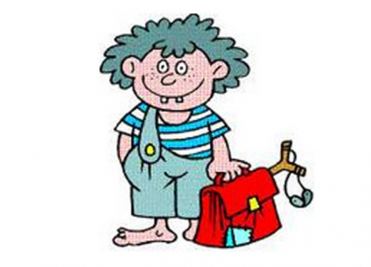
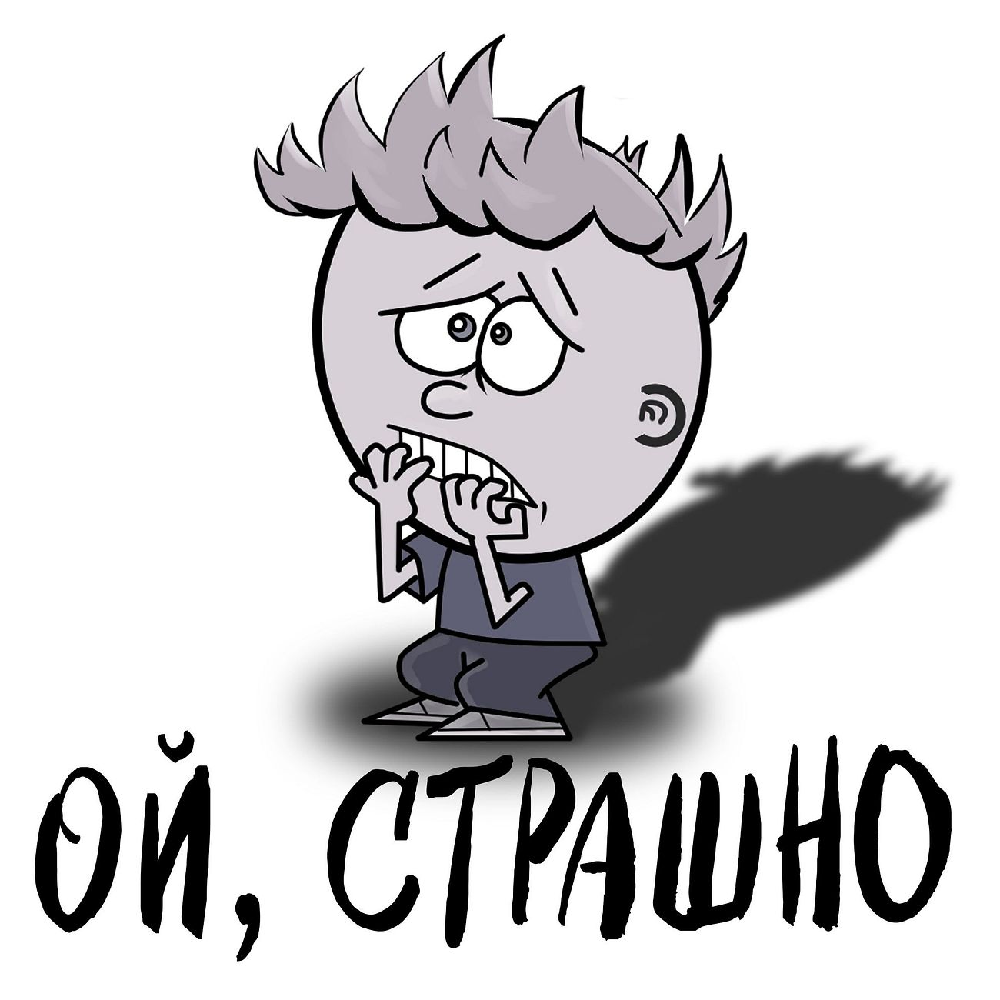
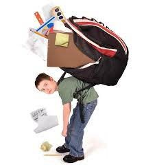
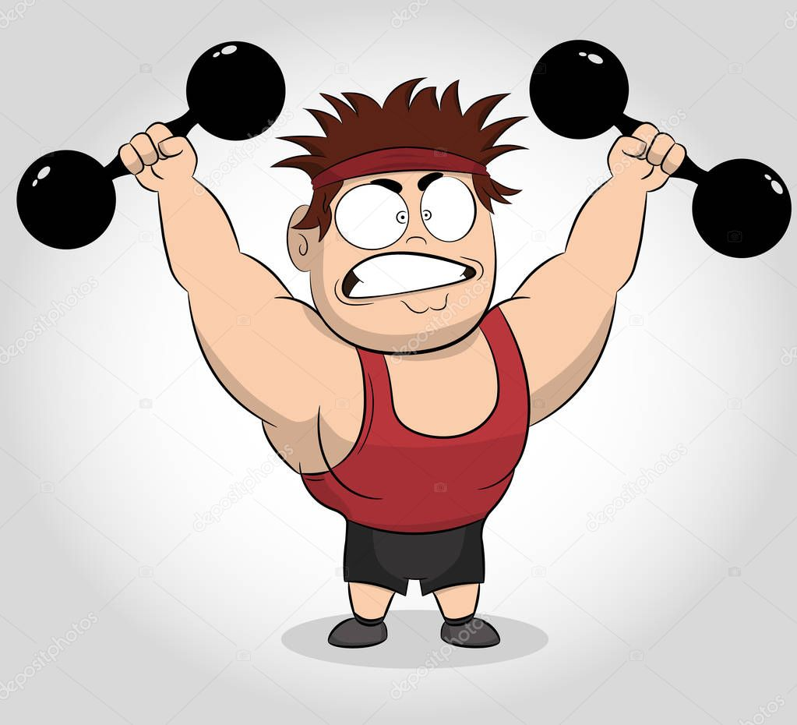

Після уроків |
||
|  | — Мамо, мене вже більше не звуть найгіршим учнем. — Молодець, синку, ти став краще вчитись? — Ні. До нас прийшов новий хлопчик, який вчиться ще гірше. |
|
Зараз зрозумієш |
||
|  | - Тату, чому цей фільм заборонено дивитись дітям? - Сиди тихенько, зараз зрозумієш. | |
Хитрий Івась |
||
|  | — Івасю, ти вже такий великий, а примушуєш малого Петрика нести і твого портфеля. — Хай вчиться допомагати старшим. |
|
"Спортсмен" |
||
|  | На уроці фізкультури вчителька запитала учня: — Який вид спорту тобі найбільше подобається? — Купання, — відповів учень. | |
Не вгадала |
||
| — Піду погуляю! Я вже прочитав усю книжку. — Так швидко? — Та в ній майже всі сторінки вирвано! — Оксано Дмитрівно, ви хотіли бачити моїх батьків? Я їх приніс, сказав учень і поклав на стіл вчительці фотографії своїх батьків. |
||